Adventures of Huckleberry Finn
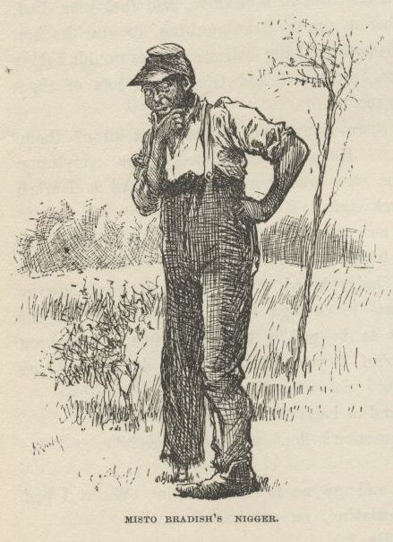
"Yes. You know that one-laigged nigger dat b'longs to old Misto Bradish? Well, he
sot up a bank, en say anybody dat put in a dollar would git fo' dollars mo' at de
en' er de year. Well, all de niggers went in, but dey didn't have much. I wuz de
on'y one dat had much. So I stuck out for mo' dan fo' dollars, en I said 'f I didn'
git it I'd start a bank mysef. Well, o' course dat nigger want' to keep me out er
de business, bekase he says dey warn't business 'nough for two banks, so he say I
could put in my five dollars en he pay me thirty-five at de en' er de year.
"So I done it. Den I reck'n'd I'd inves' de thirty-five dollars right off en keep
things a-movin'. Dey wuz a nigger name' Bob, dat had ketched a wood-flat, en his
marster didn' know it; en I bought it off'n him en told him to take de thirty-five
dollars when de en' er de year come; but somebody stole de wood-flat dat night, en
nex day de one-laigged nigger say de bank's busted. So dey didn' none uv us git no
money."
"What did you do with the ten cents, Jim?"
"Well, I 'uz gwyne to spen' it, but I had a dream, en de dream tole me to give it
to a nigger name' Balum—Balum's Ass dey call him for short; he's one er dem chuckleheads,
you know. But he's lucky, dey say, en I see I warn't lucky. De dream say let Balum
inves' de ten cents en he'd make a raise for me. Well, Balum he tuck de money, en
when he wuz in church he hear de preacher say dat whoever give to de po' len' to de
Lord, en boun' to git his money back a hund'd times. So Balum he tuck en give de
ten cents to de po', en laid low to see what wuz gwyne to come of it."
"Well, what did come of it, Jim?"
"Nuffn never come of it. I couldn' manage to k'leck dat money no way; en Balum he
couldn'. I ain' gwyne to len' no mo' money 'dout I see de security. Boun' to git
yo' money back a hund'd times, de preacher says! Ef I could git de ten cents back, I'd call it squah, en be glad er de chanst."
"Well, it's all right anyway, Jim, long as you're going to be rich again some time
or other."
"Yes; en I's rich now, come to look at it. I owns mysef, en I's wuth eight hund'd
dollars. I wisht I had de money, I wouldn' want no mo'."
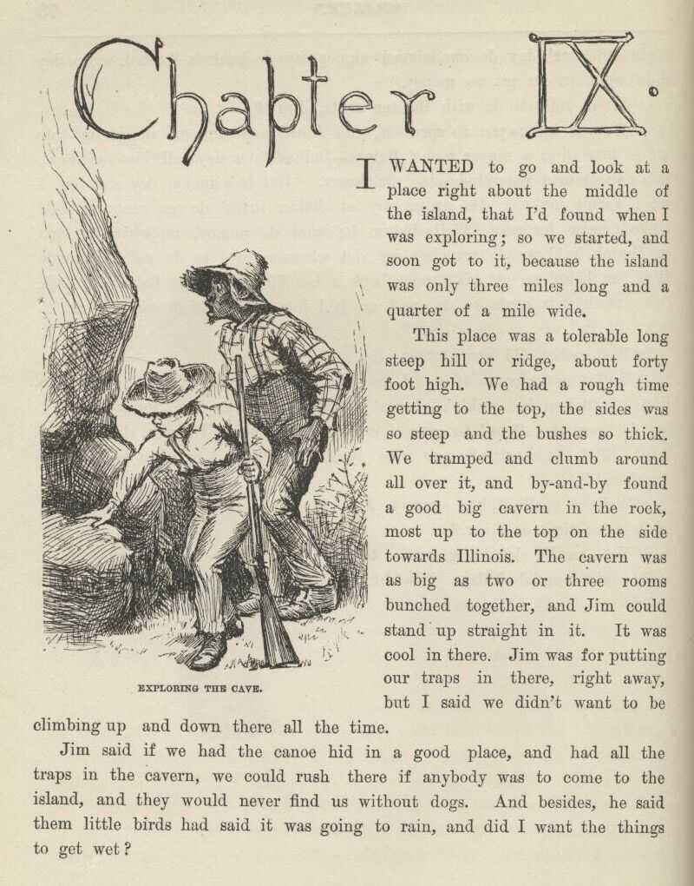
CHAPTER IX.
I wanted to go and look at a place right about the middle of the island that I'd found
when I was exploring; so we started and soon got to it, because the island was only
three miles long and a quarter of a mile wide.
This place was a tolerable long, steep hill or ridge about forty foot high. We had
a rough time getting to the top, the sides was so steep and the bushes so thick. We
tramped and clumb around all over it, and by and by found a good big cavern in the
rock, most up to the top on the side towards Illinois. The cavern was as big as two
or three rooms bunched together, and Jim could stand up straight in it. It was cool
in there. Jim was for putting our traps in there right away, but I said we didn't
want to be climbing up and down there all the time.
Jim said if we had the canoe hid in a good place, and had all the traps in the cavern,
we could rush there if anybody was to come to the island, and they would never find
us without dogs. And, besides, he said them little birds had said it was going to
rain, and did I want the things to get wet?
So we went back and got the canoe, and paddled up abreast the cavern, and lugged all
the traps up there. Then we hunted up a place close by to hide the canoe in, amongst
the thick willows. We took some fish off of the lines and set them again, and begun
to get ready for dinner.
The door of the cavern was big enough to roll a hogshead in, and on one side of the
door the floor stuck out a little bit, and was flat and a good place to build a fire
on. So we built it there and cooked dinner.
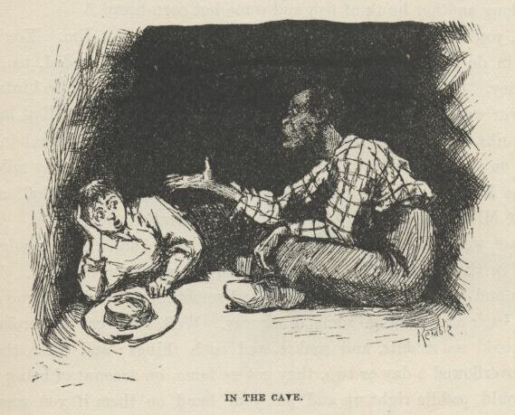
We spread the blankets inside for a carpet, and eat our dinner in there. We put all
the other things handy at the back of the cavern. Pretty soon it darkened up, and
begun to thunder and lighten; so the birds was right about it. Directly it begun
to rain, and it rained like all fury, too, and I never see the wind blow so. It was
one of these regular summer storms. It would get so dark that it looked all blue-black
outside, and lovely; and the rain would thrash along by so thick that the trees off
a little ways looked dim and spider-webby; and here would come a blast of wind that
would bend the trees down and turn up the pale underside of the leaves; and then a
perfect ripper of a gust would follow along and set the branches to tossing their
arms as if they was just wild; and next, when it was just about the bluest and blackest—FST! it was as bright as glory, and you'd have a little glimpse of tree-tops a-plunging
about away off yonder in the storm, hundreds of yards further than you could see before;
dark as sin again in a second, and now you'd hear the thunder let go with an awful
crash, and then go rumbling, grumbling, tumbling, down the sky towards the under side
of the world, like rolling empty barrels down stairs—where it's long stairs and they
bounce a good deal, you know.
"Jim, this is nice," I says. "I wouldn't want to be nowhere else but here. Pass me
along another hunk of fish and some hot corn-bread."
"Well, you wouldn't a ben here 'f it hadn't a ben for Jim. You'd a ben down dah in
de woods widout any dinner, en gittn' mos' drownded, too; dat you would, honey. Chickens
knows when it's gwyne to rain, en so do de birds, chile."
The river went on raising and raising for ten or twelve days, till at last it was
over the banks. The water was three or four foot deep on the island in the low places
and on the Illinois bottom. On that side it was a good many miles wide, but on the
Missouri side it was the same old distance across—a half a mile—because the Missouri
shore was just a wall of high bluffs.
Daytimes we paddled all over the island in the canoe, It was mighty cool and shady
in the deep woods, even if the sun was blazing outside. We went winding in and out
amongst the trees, and sometimes the vines hung so thick we had to back away and go
some other way. Well, on every old broken-down tree you could see rabbits and snakes
and such things; and when the island had been overflowed a day or two they got so
tame, on account of being hungry, that you could paddle right up and put your hand
on them if you wanted to; but not the snakes and turtles—they would slide off in the
water. The ridge our cavern was in was full of them. We could a had pets enough if
we'd wanted them.
One night we catched a little section of a lumber raft—nice pine planks. It was twelve
foot wide and about fifteen or sixteen foot long, and the top stood above water six
or seven inches—a solid, level floor. We could see saw-logs go by in the daylight
sometimes, but we let them go; we didn't show ourselves in daylight.
Another night when we was up at the head of the island, just before daylight, here
comes a frame-house down, on the west side. She was a two-story, and tilted over
considerable. We paddled out and got aboard—clumb in at an upstairs window. But
it was too dark to see yet, so we made the canoe fast and set in her to wait for daylight.
The light begun to come before we got to the foot of the island. Then we looked in
at the window. We could make out a bed, and a table, and two old chairs, and lots
of things around about on the floor, and there was clothes hanging against the wall.
There was something laying on the floor in the far corner that looked like a man.
So Jim says:
"Hello, you!"
But it didn't budge. So I hollered again, and then Jim says:
"De man ain't asleep—he's dead. You hold still—I'll go en see."
He went, and bent down and looked, and says:
"It's a dead man. Yes, indeedy; naked, too. He's ben shot in de back. I reck'n he's
ben dead two er three days. Come in, Huck, but doan' look at his face—it's too gashly."
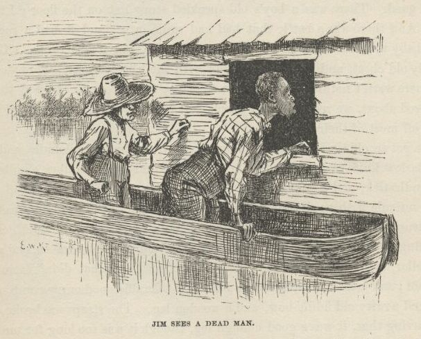
I didn't look at him at all. Jim throwed some old rags over him, but he needn't done
it; I didn't want to see him. There was heaps of old greasy cards scattered around
over the floor, and old whisky bottles, and a couple of masks made out of black cloth;
and all over the walls was the ignorantest kind of words and pictures made with charcoal.
There was two old dirty calico dresses, and a sun-bonnet, and some women's underclothes
hanging against the wall, and some men's clothing, too. We put the lot into the canoe—it
might come good. There was a boy's old speckled straw hat on the floor; I took that,
too. And there was a bottle that had had milk in it, and it had a rag stopper for
a baby to suck. We would a took the bottle, but it was broke. There was a seedy
old chest, and an old hair trunk with the hinges broke. They stood open, but there
warn't nothing left in them that was any account. The way things was scattered about
we reckoned the people left in a hurry, and warn't fixed so as to carry off most of
their stuff.
We got an old tin lantern, and a butcher-knife without any handle, and a bran-new
Barlow knife worth two bits in any store, and a lot of tallow candles, and a tin candlestick,
and a gourd, and a tin cup, and a ratty old bedquilt off the bed, and a reticule with
needles and pins and beeswax and buttons and thread and all such truck in it, and
a hatchet and some nails, and a fishline as thick as my little finger with some monstrous
hooks on it, and a roll of buckskin, and a leather dog-collar, and a horseshoe, and
some vials of medicine that didn't have no label on them; and just as we was leaving
I found a tolerable good curry-comb, and Jim he found a ratty old fiddle-bow, and
a wooden leg. The straps was broke off of it, but, barring that, it was a good enough
leg, though it was too long for me and not long enough for Jim, and we couldn't find
the other one, though we hunted all around.
And so, take it all around, we made a good haul. When we was ready to shove off we
was a quarter of a mile below the island, and it was pretty broad day; so I made Jim
lay down in the canoe and cover up with the quilt, because if he set up people could
tell he was a nigger a good ways off. I paddled over to the Illinois shore, and drifted
down most a half a mile doing it. I crept up the dead water under the bank, and hadn't
no accidents and didn't see nobody. We got home all safe.
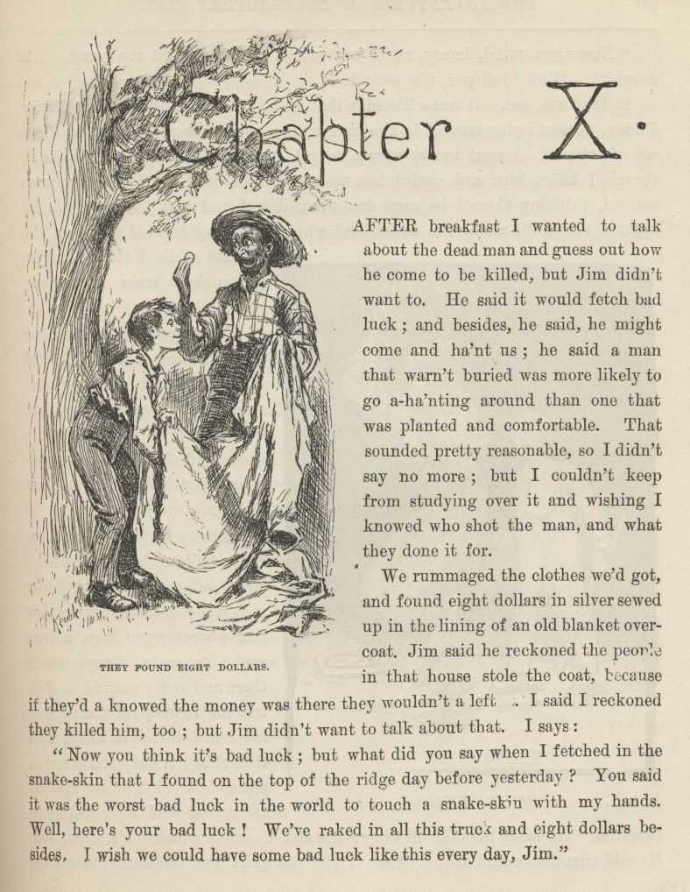
CHAPTER X.
AFTER breakfast I wanted to talk about the dead man and guess out how he come to be
killed, but Jim didn't want to. He said it would fetch bad luck; and besides, he
said, he might come and ha'nt us; he said a man that warn't buried was more likely
to go a-ha'nting around than one that was planted and comfortable. That sounded pretty
reasonable, so I didn't say no more; but I couldn't keep from studying over it and
wishing I knowed who shot the man, and what they done it for.
We rummaged the clothes we'd got, and found eight dollars in silver sewed up in the
lining of an old blanket overcoat. Jim said he reckoned the people in that house
stole the coat, because if they'd a knowed the money was there they wouldn't a left
it. I said I reckoned they killed him, too; but Jim didn't want to talk about that.
I says:
"Now you think it's bad luck; but what did you say when I fetched in the snake-skin
that I found on the top of the ridge day before yesterday? You said it was the worst
bad luck in the world to touch a snake-skin with my hands. Well, here's your bad
luck! We've raked in all this truck and eight dollars besides. I wish we could have
some bad luck like this every day, Jim."
"Never you mind, honey, never you mind. Don't you git too peart. It's a-comin'.
Mind I tell you, it's a-comin'."
It did come, too. It was a Tuesday that we had that talk. Well, after dinner Friday
we was laying around in the grass at the upper end of the ridge, and got out of tobacco.
I went to the cavern to get some, and found a rattlesnake in there. I killed him,
and curled him up on the foot of Jim's blanket, ever so natural, thinking there'd
be some fun when Jim found him there. Well, by night I forgot all about the snake,
and when Jim flung himself down on the blanket while I struck a light the snake's
mate was there, and bit him.
He jumped up yelling, and the first thing the light showed was the varmint curled
up and ready for another spring. I laid him out in a second with a stick, and Jim
grabbed pap's whisky-jug and begun to pour it down.
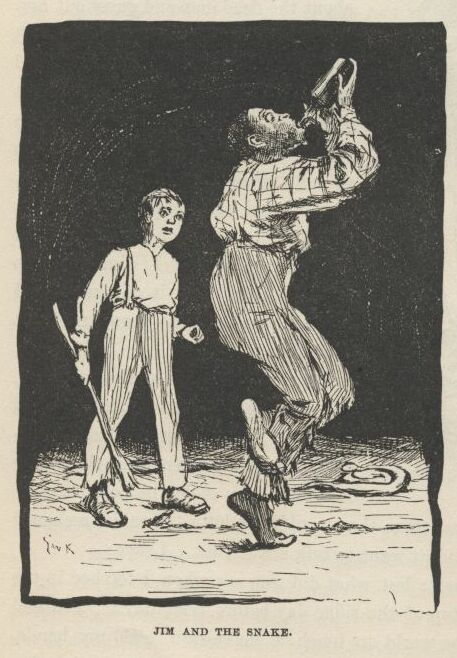
He was barefooted, and the snake bit him right on the heel. That all comes of my
being such a fool as to not remember that wherever you leave a dead snake its mate
always comes there and curls around it. Jim told me to chop off the snake's head
and throw it away, and then skin the body and roast a piece of it. I done it, and
he eat it and said it would help cure him. He made me take off the rattles and tie
them around his wrist, too. He said that that would help. Then I slid out quiet
and throwed the snakes clear away amongst the bushes; for I warn't going to let Jim
find out it was all my fault, not if I could help it.
Jim sucked and sucked at the jug, and now and then he got out of his head and pitched
around and yelled; but every time he come to himself he went to sucking at the jug
again. His foot swelled up pretty big, and so did his leg; but by and by the drunk
begun to come, and so I judged he was all right; but I'd druther been bit with a snake
than pap's whisky.
Jim was laid up for four days and nights. Then the swelling was all gone and he was
around again. I made up my mind I wouldn't ever take a-holt of a snake-skin again
with my hands, now that I see what had come of it. Jim said he reckoned I would believe
him next time. And he said that handling a snake-skin was such awful bad luck that
maybe we hadn't got to the end of it yet. He said he druther see the new moon over
his left shoulder as much as a thousand times than take up a snake-skin in his hand.
Well, I was getting to feel that way myself, though I've always reckoned that looking
at the new moon over your left shoulder is one of the carelessest and foolishest things
a body can do. Old Hank Bunker done it once, and bragged about it; and in less than
two years he got drunk and fell off of the shot-tower, and spread himself out so that
he was just a kind of a layer, as you may say; and they slid him edgeways between
two barn doors for a coffin, and buried him so, so they say, but I didn't see it.
Pap told me. But anyway it all come of looking at the moon that way, like a fool.
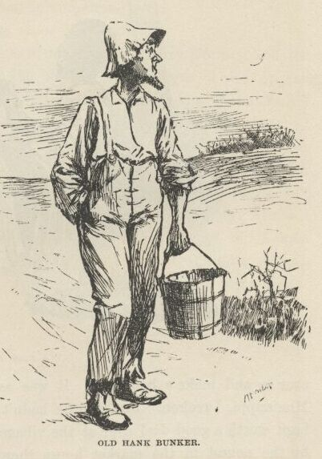
Well, the days went along, and the river went down between its banks again; and about
the first thing we done was to bait one of the big hooks with a skinned rabbit and
set it and catch a catfish that was as big as a man, being six foot two inches long,
and weighed over two hundred pounds. We couldn't handle him, of course; he would a
flung us into Illinois. We just set there and watched him rip and tear around till
he drownded. We found a brass button in his stomach and a round ball, and lots of
rubbage. We split the ball open with the hatchet, and there was a spool in it. Jim
said he'd had it there a long time, to coat it over so and make a ball of it. It
was as big a fish as was ever catched in the Mississippi, I reckon. Jim said he hadn't
ever seen a bigger one. He would a been worth a good deal over at the village. They
peddle out such a fish as that by the pound in the market-house there; everybody buys
some of him; his meat's as white as snow and makes a good fry.
Next morning I said it was getting slow and dull, and I wanted to get a stirring up
some way. I said I reckoned I would slip over the river and find out what was going
on. Jim liked that notion; but he said I must go in the dark and look sharp. Then
he studied it over and said, couldn't I put on some of them old things and dress up
like a girl? That was a good notion, too. So we shortened up one of the calico gowns,
and I turned up my trouser-legs to my knees and got into it. Jim hitched it behind
with the hooks, and it was a fair fit. I put on the sun-bonnet and tied it under
my chin, and then for a body to look in and see my face was like looking down a joint
of stove-pipe. Jim said nobody would know me, even in the daytime, hardly. I practiced
around all day to get the hang of the things, and by and by I could do pretty well
in them, only Jim said I didn't walk like a girl; and he said I must quit pulling
up my gown to get at my britches-pocket. I took notice, and done better.
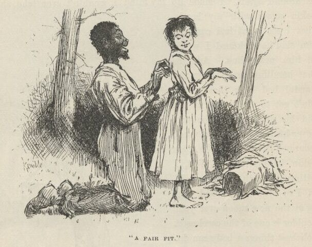
I started up the Illinois shore in the canoe just after dark.
I started across to the town from a little below the ferry-landing, and the drift
of the current fetched me in at the bottom of the town. I tied up and started along
the bank. There was a light burning in a little shanty that hadn't been lived in
for a long time, and I wondered who had took up quarters there. I slipped up and
peeped in at the window. There was a woman about forty year old in there knitting
by a candle that was on a pine table. I didn't know her face; she was a stranger,
for you couldn't start a face in that town that I didn't know. Now this was lucky,
because I was weakening; I was getting afraid I had come; people might know my voice
and find me out. But if this woman had been in such a little town two days she could
tell me all I wanted to know; so I knocked at the door, and made up my mind I wouldn't
forget I was a girl.
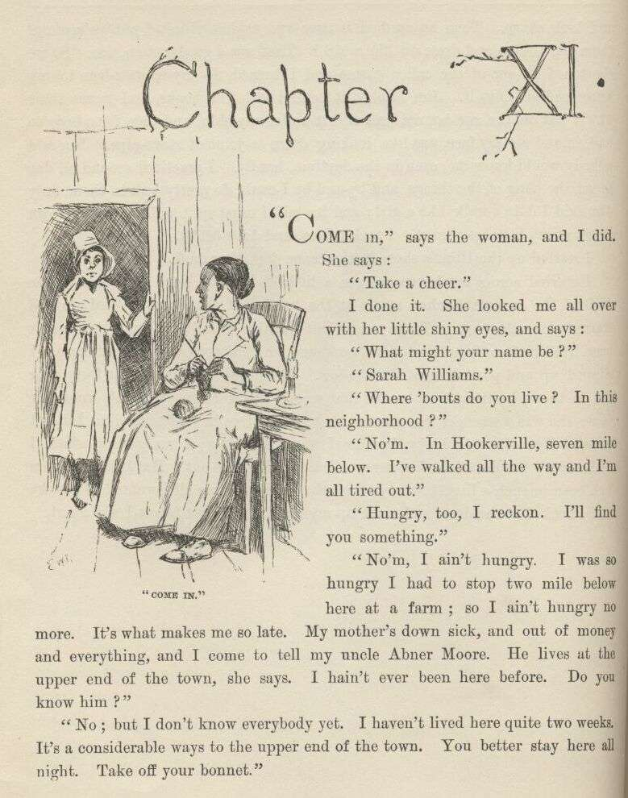
CHAPTER XI.
"COME in," says the woman, and I did. She says: "Take a cheer."
I done it. She looked me all over with her little shiny eyes, and says:
"What might your name be?"
"Sarah Williams."
"Where 'bouts do you live? In this neighborhood?'
"No'm. In Hookerville, seven mile below. I've walked all the way and I'm all tired
out."
"Hungry, too, I reckon. I'll find you something."
"No'm, I ain't hungry. I was so hungry I had to stop two miles below here at a farm;
so I ain't hungry no more. It's what makes me so late. My mother's down sick, and
out of money and everything, and I come to tell my uncle Abner Moore. He lives at
the upper end of the town, she says. I hain't ever been here before. Do you know
him?"
"No; but I don't know everybody yet. I haven't lived here quite two weeks. It's a
considerable ways to the upper end of the town. You better stay here all night. Take
off your bonnet."
"No," I says; "I'll rest a while, I reckon, and go on. I ain't afeared of the dark."
She said she wouldn't let me go by myself, but her husband would be in by and by,
maybe in a hour and a half, and she'd send him along with me. Then she got to talking
about her husband, and about her relations up the river, and her relations down the
river, and about how much better off they used to was, and how they didn't know but
they'd made a mistake coming to our town, instead of letting well alone—and so on
and so on, till I was afeard I had made a mistake coming to her to find out what was
going on in the town; but by and by she dropped on to pap and the murder, and then
I was pretty willing to let her clatter right along. She told about me and Tom Sawyer
finding the six thousand dollars (only she got it ten) and all about pap and what
a hard lot he was, and what a hard lot I was, and at last she got down to where I
was murdered. I says:
"Who done it? We've heard considerable about these goings on down in Hookerville,
but we don't know who 'twas that killed Huck Finn."
"Well, I reckon there's a right smart chance of people here that'd like to know who killed him. Some think old Finn done it himself."
"No—is that so?"
"Most everybody thought it at first. He'll never know how nigh he come to getting
lynched. But before night they changed around and judged it was done by a runaway
nigger named Jim."
"Why he—"
I stopped. I reckoned I better keep still. She run on, and never noticed I had put
in at all:
"The nigger run off the very night Huck Finn was killed. So there's a reward out
for him—three hundred dollars. And there's a reward out for old Finn, too—two hundred
dollars. You see, he come to town the morning after the murder, and told about it,
and was out with 'em on the ferryboat hunt, and right away after he up and left. Before
night they wanted to lynch him, but he was gone, you see. Well, next day they found
out the nigger was gone; they found out he hadn't ben seen sence ten o'clock the night
the murder was done. So then they put it on him, you see; and while they was full
of it, next day, back comes old Finn, and went boo-hooing to Judge Thatcher to get
money to hunt for the nigger all over Illinois with. The judge gave him some, and
that evening he got drunk, and was around till after midnight with a couple of mighty
hard-looking strangers, and then went off with them. Well, he hain't come back sence,
and they ain't looking for him back till this thing blows over a little, for people
thinks now that he killed his boy and fixed things so folks would think robbers done
it, and then he'd get Huck's money without having to bother a long time with a lawsuit.
People do say he warn't any too good to do it. Oh, he's sly, I reckon. If he don't
come back for a year he'll be all right. You can't prove anything on him, you know;
everything will be quieted down then, and he'll walk in Huck's money as easy as nothing."
"Yes, I reckon so, 'm. I don't see nothing in the way of it. Has everybody quit
thinking the nigger done it?"
"Oh, no, not everybody. A good many thinks he done it. But they'll get the nigger
pretty soon now, and maybe they can scare it out of him."
"Why, are they after him yet?"
"Well, you're innocent, ain't you! Does three hundred dollars lay around every day
for people to pick up? Some folks think the nigger ain't far from here. I'm one
of them—but I hain't talked it around. A few days ago I was talking with an old couple
that lives next door in the log shanty, and they happened to say hardly anybody ever
goes to that island over yonder that they call Jackson's Island. Don't anybody live
there? says I. No, nobody, says they. I didn't say any more, but I done some thinking.
I was pretty near certain I'd seen smoke over there, about the head of the island,
a day or two before that, so I says to myself, like as not that nigger's hiding over
there; anyway, says I, it's worth the trouble to give the place a hunt. I hain't
seen any smoke sence, so I reckon maybe he's gone, if it was him; but husband's going
over to see—him and another man. He was gone up the river; but he got back to-day,
and I told him as soon as he got here two hours ago."
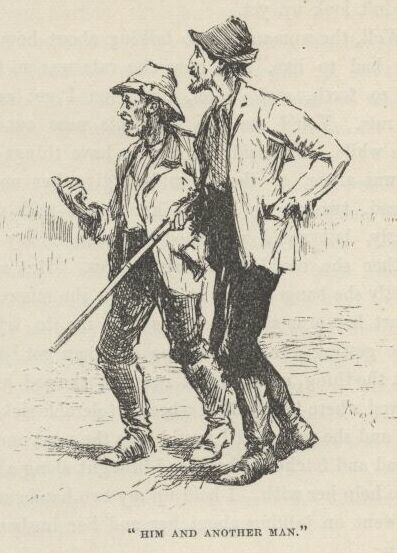
I had got so uneasy I couldn't set still. I had to do something with my hands; so
I took up a needle off of the table and went to threading it. My hands shook, and
I was making a bad job of it. When the woman stopped talking I looked up, and she
was looking at me pretty curious and smiling a little. I put down the needle and
thread, and let on to be interested—and I was, too—and says:
"Three hundred dollars is a power of money. I wish my mother could get it. Is your
husband going over there to-night?"
"Oh, yes. He went up-town with the man I was telling you of, to get a boat and see
if they could borrow another gun. They'll go over after midnight."
"Couldn't they see better if they was to wait till daytime?"
"Yes. And couldn't the nigger see better, too? After midnight he'll likely be asleep,
and they can slip around through the woods and hunt up his camp fire all the better
for the dark, if he's got one."
"I didn't think of that."
The woman kept looking at me pretty curious, and I didn't feel a bit comfortable.
Pretty soon she says,
"What did you say your name was, honey?"
"M—Mary Williams."
Somehow it didn't seem to me that I said it was Mary before, so I didn't look up—seemed
to me I said it was Sarah; so I felt sort of cornered, and was afeared maybe I was
looking it, too. I wished the woman would say something more; the longer she set
still the uneasier I was. But now she says:
"Honey, I thought you said it was Sarah when you first come in?"
"Oh, yes'm, I did. Sarah Mary Williams. Sarah's my first name. Some calls me Sarah,
some calls me Mary."
"Oh, that's the way of it?"
"Yes'm."
I was feeling better then, but I wished I was out of there, anyway. I couldn't look
up yet.
Well, the woman fell to talking about how hard times was, and how poor they had to
live, and how the rats was as free as if they owned the place, and so forth and so
on, and then I got easy again. She was right about the rats. You'd see one stick
his nose out of a hole in the corner every little while. She said she had to have
things handy to throw at them when she was alone, or they wouldn't give her no peace.
She showed me a bar of lead twisted up into a knot, and said she was a good shot
with it generly, but she'd wrenched her arm a day or two ago, and didn't know whether
she could throw true now. But she watched for a chance, and directly banged away
at a rat; but she missed him wide, and said "Ouch!" it hurt her arm so. Then she
told me to try for the next one. I wanted to be getting away before the old man got
back, but of course I didn't let on. I got the thing, and the first rat that showed
his nose I let drive, and if he'd a stayed where he was he'd a been a tolerable sick
rat. She said that was first-rate, and she reckoned I would hive the next one. She
went and got the lump of lead and fetched it back, and brought along a hank of yarn
which she wanted me to help her with. I held up my two hands and she put the hank
over them, and went on talking about her and her husband's matters. But she broke
off to say:
"Keep your eye on the rats. You better have the lead in your lap, handy."
So she dropped the lump into my lap just at that moment, and I clapped my legs together
on it and she went on talking. But only about a minute. Then she took off the hank
and looked me straight in the face, and very pleasant, and says:
"Come, now, what's your real name?"
"Wh—what, mum?"
"What's your real name? Is it Bill, or Tom, or Bob?—or what is it?"
I reckon I shook like a leaf, and I didn't know hardly what to do. But I says:
"Please to don't poke fun at a poor girl like me, mum. If I'm in the way here, I'll—"
"No, you won't. Set down and stay where you are. I ain't going to hurt you, and
I ain't going to tell on you, nuther. You just tell me your secret, and trust me.
I'll keep it; and, what's more, I'll help you. So'll my old man if you want him to.
You see, you're a runaway 'prentice, that's all. It ain't anything. There ain't
no harm in it. You've been treated bad, and you made up your mind to cut. Bless you,
child, I wouldn't tell on you. Tell me all about it now, that's a good boy."
So I said it wouldn't be no use to try to play it any longer, and I would just make
a clean breast and tell her everything, but she musn't go back on her promise. Then
I told her my father and mother was dead, and the law had bound me out to a mean old
farmer in the country thirty mile back from the river, and he treated me so bad I
couldn't stand it no longer; he went away to be gone a couple of days, and so I took
my chance and stole some of his daughter's old clothes and cleared out, and I had
been three nights coming the thirty miles. I traveled nights, and hid daytimes and
slept, and the bag of bread and meat I carried from home lasted me all the way, and
I had a-plenty. I said I believed my uncle Abner Moore would take care of me, and
so that was why I struck out for this town of Goshen.
"Goshen, child? This ain't Goshen. This is St. Petersburg. Goshen's ten mile further
up the river. Who told you this was Goshen?"
"Why, a man I met at daybreak this morning, just as I was going to turn into the woods
for my regular sleep. He told me when the roads forked I must take the right hand,
and five mile would fetch me to Goshen."
"He was drunk, I reckon. He told you just exactly wrong."
"Well, he did act like he was drunk, but it ain't no matter now. I got to be moving
along. I'll fetch Goshen before daylight."
"Hold on a minute. I'll put you up a snack to eat. You might want it."
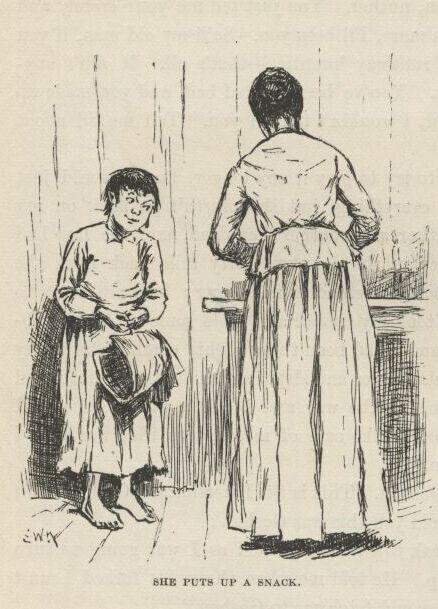
So she put me up a snack, and says:
"Say, when a cow's laying down, which end of her gets up first? Answer up prompt
now—don't stop to study over it. Which end gets up first?"
"The hind end, mum."
"Well, then, a horse?"
"The for'rard end, mum."
"Which side of a tree does the moss grow on?"
"North side."
"If fifteen cows is browsing on a hillside, how many of them eats with their heads
pointed the same direction?"
"The whole fifteen, mum."
"Well, I reckon you have lived in the country. I thought maybe you was trying to hocus me again. What's
your real name, now?"
"George Peters, mum."
"Well, try to remember it, George. Don't forget and tell me it's Elexander before
you go, and then get out by saying it's George Elexander when I catch you. And don't
go about women in that old calico. You do a girl tolerable poor, but you might fool
men, maybe. Bless you, child, when you set out to thread a needle don't hold the
thread still and fetch the needle up to it; hold the needle still and poke the thread
at it; that's the way a woman most always does, but a man always does t'other way.
And when you throw at a rat or anything, hitch yourself up a tiptoe and fetch your
hand up over your head as awkward as you can, and miss your rat about six or seven
foot. Throw stiff-armed from the shoulder, like there was a pivot there for it to
turn on, like a girl; not from the wrist and elbow, with your arm out to one side,
like a boy. And, mind you, when a girl tries to catch anything in her lap she throws
her knees apart; she don't clap them together, the way you did when you catched the
lump of lead. Why, I spotted you for a boy when you was threading the needle; and
I contrived the other things just to make certain. Now trot along to your uncle,
Sarah Mary Williams George Elexander Peters, and if you get into trouble you send
word to Mrs. Judith Loftus, which is me, and I'll do what I can to get you out of
it. Keep the river road all the way, and next time you tramp take shoes and socks
with you. The river road's a rocky one, and your feet'll be in a condition when you
get to Goshen, I reckon."
I went up the bank about fifty yards, and then I doubled on my tracks and slipped
back to where my canoe was, a good piece below the house. I jumped in, and was off
in a hurry. I went up-stream far enough to make the head of the island, and then
started across. I took off the sun-bonnet, for I didn't want no blinders on then.
When I was about the middle I heard the clock begin to strike, so I stops and listens;
the sound come faint over the water but clear—eleven. When I struck the head of the
island I never waited to blow, though I was most winded, but I shoved right into the
timber where my old camp used to be, and started a good fire there on a high and dry
spot.
Then I jumped in the canoe and dug out for our place, a mile and a half below, as
hard as I could go. I landed, and slopped through the timber and up the ridge and
into the cavern. There Jim laid, sound asleep on the ground. I roused him out and
says:
"Git up and hump yourself, Jim! There ain't a minute to lose. They're after us!"
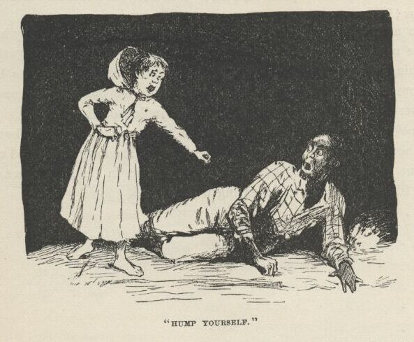
Jim never asked no questions, he never said a word; but the way he worked for the
next half an hour showed about how he was scared. By that time everything we had
in the world was on our raft, and she was ready to be shoved out from the willow cove
where she was hid. We put out the camp fire at the cavern the first thing, and didn't
show a candle outside after that.
I took the canoe out from the shore a little piece, and took a look; but if there
was a boat around I couldn't see it, for stars and shadows ain't good to see by. Then
we got out the raft and slipped along down in the shade, past the foot of the island
dead still—never saying a word.
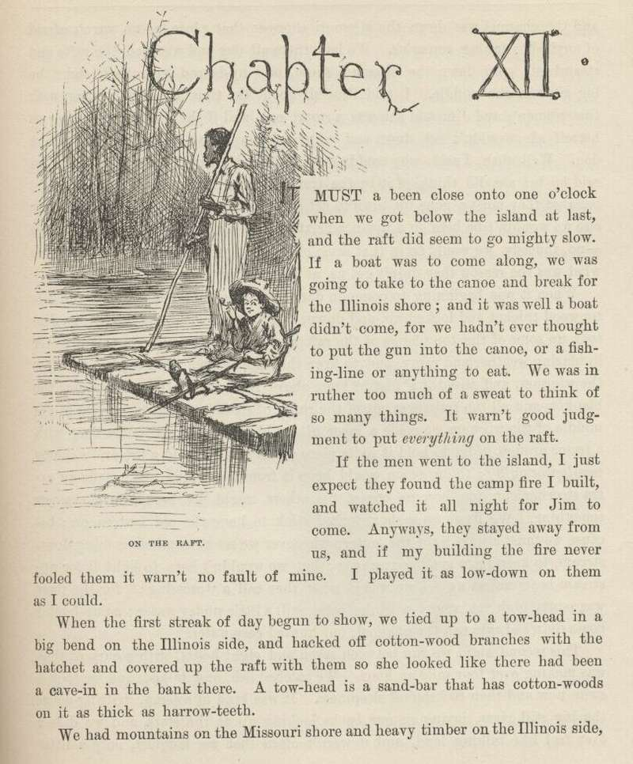
CHAPTER XII.
IT must a been close on to one o'clock when we got below the island at last, and the
raft did seem to go mighty slow. If a boat was to come along we was going to take
to the canoe and break for the Illinois shore; and it was well a boat didn't come,
for we hadn't ever thought to put the gun in the canoe, or a fishing-line, or anything
to eat. We was in ruther too much of a sweat to think of so many things. It warn't
good judgment to put everything on the raft.
If the men went to the island I just expect they found the camp fire I built, and
watched it all night for Jim to come. Anyways, they stayed away from us, and if my
building the fire never fooled them it warn't no fault of mine. I played it as low
down on them as I could.
When the first streak of day began to show we tied up to a towhead in a big bend on
the Illinois side, and hacked off cottonwood branches with the hatchet, and covered
up the raft with them so she looked like there had been a cave-in in the bank there.
A tow-head is a sandbar that has cottonwoods on it as thick as harrow-teeth.
We had mountains on the Missouri shore and heavy timber on the Illinois side, and
the channel was down the Missouri shore at that place, so we warn't afraid of anybody
running across us. We laid there all day, and watched the rafts and steamboats spin
down the Missouri shore, and up-bound steamboats fight the big river in the middle.
I told Jim all about the time I had jabbering with that woman; and Jim said she was
a smart one, and if she was to start after us herself she wouldn't set down and watch
a camp fire—no, sir, she'd fetch a dog. Well, then, I said, why couldn't she tell
her husband to fetch a dog? Jim said he bet she did think of it by the time the men
was ready to start, and he believed they must a gone up-town to get a dog and so they
lost all that time, or else we wouldn't be here on a towhead sixteen or seventeen
mile below the village—no, indeedy, we would be in that same old town again. So I
said I didn't care what was the reason they didn't get us as long as they didn't.
When it was beginning to come on dark we poked our heads out of the cottonwood thicket,
and looked up and down and across; nothing in sight; so Jim took up some of the top
planks of the raft and built a snug wigwam to get under in blazing weather and rainy,
and to keep the things dry. Jim made a floor for the wigwam, and raised it a foot
or more above the level of the raft, so now the blankets and all the traps was out
of reach of steamboat waves. Right in the middle of the wigwam we made a layer of
dirt about five or six inches deep with a frame around it for to hold it to its place;
this was to build a fire on in sloppy weather or chilly; the wigwam would keep it
from being seen. We made an extra steering-oar, too, because one of the others might
get broke on a snag or something. We fixed up a short forked stick to hang the old
lantern on, because we must always light the lantern whenever we see a steamboat coming
down-stream, to keep from getting run over; but we wouldn't have to light it for up-stream
boats unless we see we was in what they call a "crossing"; for the river was pretty
high yet, very low banks being still a little under water; so up-bound boats didn't
always run the channel, but hunted easy water.
This second night we run between seven and eight hours, with a current that was making
over four mile an hour. We catched fish and talked, and we took a swim now and then
to keep off sleepiness. It was kind of solemn, drifting down the big, still river,
laying on our backs looking up at the stars, and we didn't ever feel like talking
loud, and it warn't often that we laughed—only a little kind of a low chuckle. We
had mighty good weather as a general thing, and nothing ever happened to us at all—that
night, nor the next, nor the next.
Every night we passed towns, some of them away up on black hillsides, nothing but
just a shiny bed of lights; not a house could you see. The fifth night we passed
St. Louis, and it was like the whole world lit up. In St. Petersburg they used to
say there was twenty or thirty thousand people in St. Louis, but I never believed
it till I see that wonderful spread of lights at two o'clock that still night. There
warn't a sound there; everybody was asleep.
Every night now I used to slip ashore towards ten o'clock at some little village,
and buy ten or fifteen cents' worth of meal or bacon or other stuff to eat; and sometimes
I lifted a chicken that warn't roosting comfortable, and took him along. Pap always
said, take a chicken when you get a chance, because if you don't want him yourself
you can easy find somebody that does, and a good deed ain't ever forgot. I never
see pap when he didn't want the chicken himself, but that is what he used to say,
anyway.
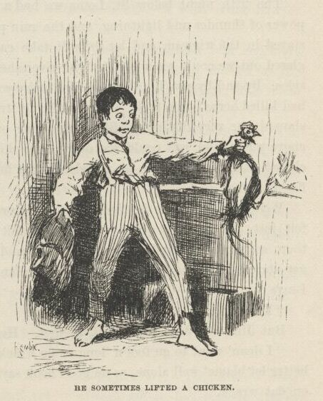
Mornings before daylight I slipped into cornfields and borrowed a watermelon, or a
mushmelon, or a punkin, or some new corn, or things of that kind. Pap always said
it warn't no harm to borrow things if you was meaning to pay them back some time;
but the widow said it warn't anything but a soft name for stealing, and no decent
body would do it. Jim said he reckoned the widow was partly right and pap was partly
right; so the best way would be for us to pick out two or three things from the list
and say we wouldn't borrow them any more—then he reckoned it wouldn't be no harm to
borrow the others. So we talked it over all one night, drifting along down the river,
trying to make up our minds whether to drop the watermelons, or the cantelopes, or
the mushmelons, or what. But towards daylight we got it all settled satisfactory,
and concluded to drop crabapples and p'simmons. We warn't feeling just right before
that, but it was all comfortable now. I was glad the way it come out, too, because
crabapples ain't ever good, and the p'simmons wouldn't be ripe for two or three months
yet.
We shot a water-fowl now and then that got up too early in the morning or didn't go
to bed early enough in the evening. Take it all round, we lived pretty high.
The fifth night below St. Louis we had a big storm after midnight, with a power of
thunder and lightning, and the rain poured down in a solid sheet. We stayed in the
wigwam and let the raft take care of itself. When the lightning glared out we could
see a big straight river ahead, and high, rocky bluffs on both sides. By and by says
I, "Hel-lo, Jim, looky yonder!" It was a steamboat that had killed herself on a rock. We was
drifting straight down for her. The lightning showed her very distinct. She was
leaning over, with part of her upper deck above water, and you could see every little
chimbly-guy clean and clear, and a chair by the big bell, with an old slouch hat hanging
on the back of it, when the flashes come.
Well, it being away in the night and stormy, and all so mysterious-like, I felt just
the way any other boy would a felt when I see that wreck laying there so mournful
and lonesome in the middle of the river. I wanted to get aboard of her and slink
around a little, and see what there was there. So I says:
"Le's land on her, Jim."
But Jim was dead against it at first. He says:
"I doan' want to go fool'n 'long er no wrack. We's doin' blame' well, en we better
let blame' well alone, as de good book says. Like as not dey's a watchman on dat
wrack."
"Watchman your grandmother," I says; "there ain't nothing to watch but the texas and
the pilot-house; and do you reckon anybody's going to resk his life for a texas and
a pilot-house such a night as this, when it's likely to break up and wash off down
the river any minute?" Jim couldn't say nothing to that, so he didn't try. "And
besides," I says, "we might borrow something worth having out of the captain's stateroom.
Seegars, I bet you—and cost five cents apiece, solid cash. Steamboat captains is
always rich, and get sixty dollars a month, and they don't care a cent what a thing costs, you know, long as they want it. Stick a candle
in your pocket; I can't rest, Jim, till we give her a rummaging. Do you reckon Tom
Sawyer would ever go by this thing? Not for pie, he wouldn't. He'd call it an adventure—that's
what he'd call it; and he'd land on that wreck if it was his last act. And wouldn't
he throw style into it?—wouldn't he spread himself, nor nothing? Why, you'd think
it was Christopher C'lumbus discovering Kingdom-Come. I wish Tom Sawyer was here."
Jim he grumbled a little, but give in. He said we mustn't talk any more than we could
help, and then talk mighty low. The lightning showed us the wreck again just in time,
and we fetched the stabboard derrick, and made fast there.
The deck was high out here. We went sneaking down the slope of it to labboard, in
the dark, towards the texas, feeling our way slow with our feet, and spreading our
hands out to fend off the guys, for it was so dark we couldn't see no sign of them.
Pretty soon we struck the forward end of the skylight, and clumb on to it; and the
next step fetched us in front of the captain's door, which was open, and by Jimminy,
away down through the texas-hall we see a light! and all in the same second we seem
to hear low voices in yonder!
Jim whispered and said he was feeling powerful sick, and told me to come along. I
says, all right, and was going to start for the raft; but just then I heard a voice
wail out and say:
"Oh, please don't, boys; I swear I won't ever tell!"
Another voice said, pretty loud:
"It's a lie, Jim Turner. You've acted this way before. You always want more'n your
share of the truck, and you've always got it, too, because you've swore 't if you
didn't you'd tell. But this time you've said it jest one time too many. You're the
meanest, treacherousest hound in this country."
By this time Jim was gone for the raft. I was just a-biling with curiosity; and I
says to myself, Tom Sawyer wouldn't back out now, and so I won't either; I'm a-going
to see what's going on here. So I dropped on my hands and knees in the little passage,
and crept aft in the dark till there warn't but one stateroom betwixt me and the cross-hall
of the texas. Then in there I see a man stretched on the floor and tied hand and
foot, and two men standing over him, and one of them had a dim lantern in his hand,
and the other one had a pistol. This one kept pointing the pistol at the man's head
on the floor, and saying:
"I'd like to! And I orter, too—a mean skunk!"